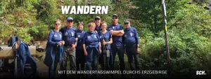

← Alle News der Abteilung Wandern

+++ Mit dem Wandertagswimpel durchs Erzgebirge +++
Unsere Wimpelgruppe auf dem Weg nach Oberwiesenthal
Der Weg geht weiter – und mit jedem Kilometer rückt das große Ziel ein Stück näher. Unsere Wimpelgruppe ist weiterhin mit dem Wandertagswimpel unterwegs, der in diesem Jahr eine ganz besondere Reise erlebt. Nach dem 122. Deutschen Wandertag im Eichsfeld führt sein Weg durch das Erzgebirge zum nächsten Gastgeber. Am 24. September soll der Wimpel beim 123. Deutschen Wandertag feierlich in Oberwiesenthal eintreffen.
Vom Auersberg durch eine Region mit Geschichte
Am Mittwoch, 2. September, führte die Route unserer Wanderfreunde vom Auersberg weiter in Richtung Johanngeorgenstadt. Eine Etappe, die nicht nur landschaftlich einiges zu bieten hatte. Der Weg führte mitten durch eine Region, deren Geschichte seit Jahrhunderten eng mit dem Bergbau verbunden ist. Genau diese Verbindung von Landschaft, Tradition und Bergbau prägt das Erzgebirge bis heute. Die Montanregion Erzgebirge/Krušnohoří gehört zum UNESCO-Welterbe und wird auch beim diesjährigen Deutschen Wandertag eine zentrale Rolle spielen. Zahlreiche Touren beschäftigen sich mit der Natur, der Kultur und der Bergbaugeschichte der Region.
Für unsere Gruppe bedeutete die Etappe einen weiteren besonderen Abschnitt auf der langen Reise mit dem Wandertagswimpel. Ziel des Tages war Johanngeorgenstadt nahe der deutsch-tschechischen Grenze.
MDR begleitet unsere Wanderfreunde
Ganz allein war unsere Wimpelgruppe an diesem Tag allerdings nicht unterwegs. Ein Kamerateam des MDR Sachsen begleitete die Wanderung und hielt Eindrücke von der Etappe fest.
Für unsere Wanderabteilung ist diese mediale Begleitung eine schöne Anerkennung. Schließlich geht es bei der Wimpelwanderung um weit mehr als die Strecke von einem Ort zum nächsten. Unsere Wanderfreunde tragen ein Stück des vergangenen Deutschen Wandertages aus dem Eichsfeld zum neuen Austragungsort – und vertreten dabei zugleich unseren Verein und unsere Heimat weit über die Region hinaus.
Dass der MDR den Weg begleitet, passt auch zum wachsenden Interesse am kommenden Wandertag. Der Deutsche Wanderverband erwartet in Oberwiesenthal bis zu 20.000 Gäste aus Deutschland und vielen europäischen Ländern. Zudem ist für den 26. September eine MDR-Berichterstattung rund um den Deutschen Wandertag angekündigt.
Durch das Steinbachtal nach Rittersgrün
Schon einen Tag später wurden die Wanderschuhe erneut geschnürt. Am Donnerstag, 3. September, führte die nächste Etappe durch das idyllische Steinbachtal in Richtung Rittersgrün.
Nach der vom Bergbau geprägten Route des Vortages zeigte sich das Erzgebirge dabei wieder von einer anderen Seite. Wälder, Täler und die typische Mittelgebirgslandschaft begleiteten unsere Gruppe auf ihrem weiteren Weg. Schritt für Schritt arbeitet sie sich damit durch die Region, in der Ende September Wanderfreunde aus ganz Europa zusammenkommen werden.
Denn 2026 bekommt der Deutsche Wandertag noch einmal eine besondere Dimension: Parallel findet erstmals die internationale EURORANDO im deutsch-tschechischen Erzgebirge statt. Unter dem gemeinsamen Gedanken „bewegt verbunden – Gemeinsam durch das Erzgebirge“ sollen Naturerlebnis, Begegnung und das Miteinander über Ländergrenzen hinweg verbunden werden.
Das große Ziel rückt näher
Noch liegen einige Kilometer vor unserer Wimpelgruppe. Doch das Ziel ist klar: Oberwiesenthal. Dort wird der 123. Deutsche Wandertag vom 24. bis 27. September ausgetragen. Bereits ab dem 20. September beginnt die EURORANDO und macht das Erzgebirge für eine Woche zum Treffpunkt der europäischen Wanderszene.
Für unsere Wanderfreunde wird besonders der Donnerstag, 24. September, ein großer Moment. Um 15 Uhr beginnt die offizielle Eröffnung des 123. Deutschen Wandertages – und ausdrücklich zum Festprogramm gehört der
feierliche Empfang der Wimpelwandergruppe aus Heilbad Heiligenstadt.
Bis dahin wandert der Wimpel weiter. Kilometer für Kilometer, Etappe für Etappe. Unsere Wimpelgruppe trägt dabei nicht nur ein traditionsreiches Symbol durch das Erzgebirge. Sie nimmt auch ein Stück Eichsfeld, ein Stück Vereinsleben und viele Erinnerungen an den Deutschen Wandertag 2024 mit auf die Reise.
Und genau das macht diese Wochen für unsere Wanderabteilung so besonders. Aus einem langen Weg werden viele kleine Geschichten – und am Ende steht in Oberwiesenthal ein Ziel, auf das unsere Wanderfreunde seit dem Aufbruch gemeinsam hinarbeiten.